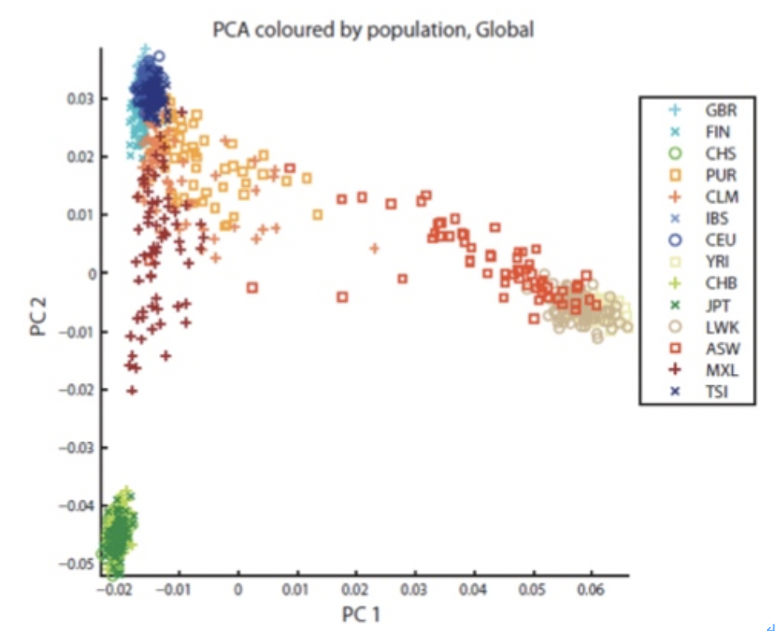
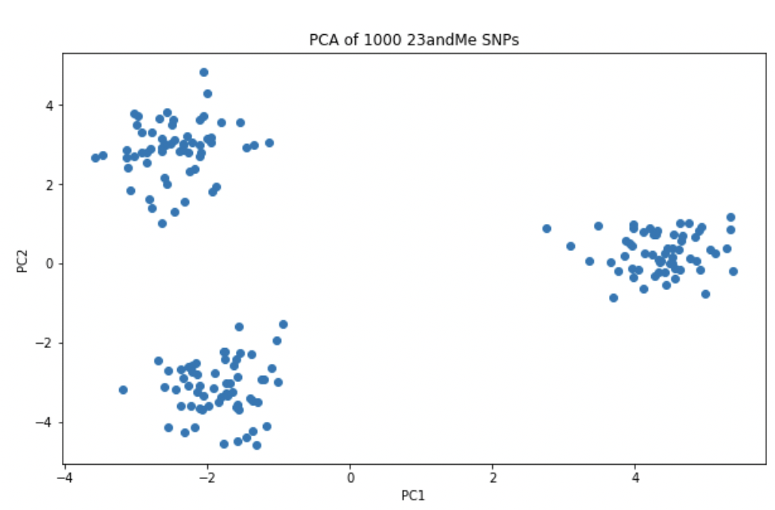
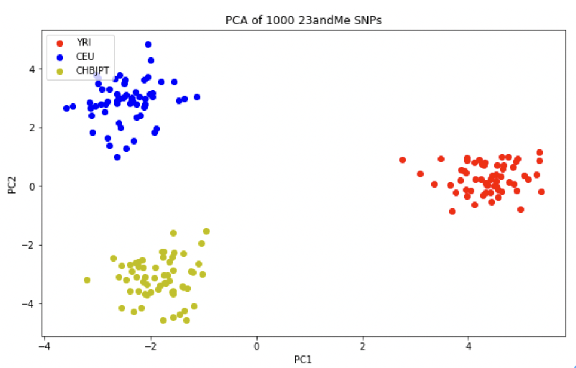
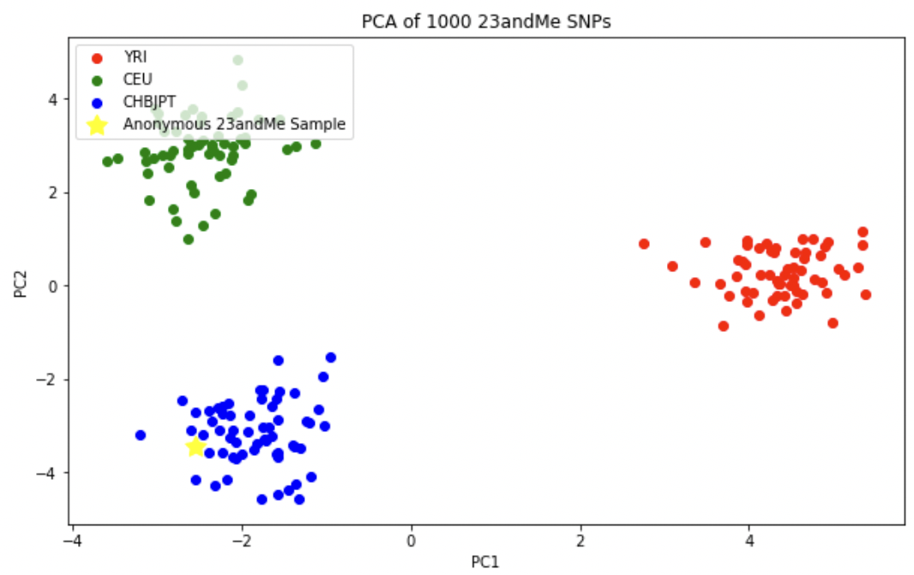

인구 집단 비교¶
인종 간에 신체적, 문화적으로 서로 다양함을 보유하고 있다. 다양함에 있어서 유전적인 원인 또한 큰 부분을 차지하고 있다. 인종 또는 집단에서의 유전적인 특징을 연구하는 것을 집단 유전학(population genetics)라고 한다.
일본에서 이루어진 연구를 보면 일본인 7,003명의 샘플을 모아 유전체 데이터를 분석한 결과 오키나와 지방에 거주하는 류큐(Ryukyu)와 일본 본토의 혼도(Hondo) 두개의 집단으로 분류된다는 것이다. 이 두 집단간의 가장 큰 차이를 보인 마커는 바로 귀지(마커 rs17822931)와 머리카락 굵기(rs3827760)와 관련된 유전자로 우리나라의 경우에는 100%가 마른 귀지 타입(지노타입 AA)을 가지고 있는데 반해 일본은 마른 귀지와 젖은 귀지가 혼재하고 있다.
일본인의 유래에 대한 가설로는 16,000년전 일본에 원래 거주하던 조몬과 3,000~18,00년전 한반도를 통해 넘어온 야오이 두 그룹이 기원이라는 이중 구조(dual structure) 모델과 원래 하나의 민족이라는 하나의 기원(single origin) 가설이 존재하는데 한반도에서 넘어온 야오이(마른 귀지) 사람과 일본내에 거주하던 조몬(젖은 귀지)이 혼합된 민족임을 시사한다.
Note
- 이번 장을 끝마치면 당신은 아래의 3가지에 대해서 배울 수 있다.
- 전세계 인종의 공용 유전체 데이터에 접근하는 방법
- 23anMe 데이터와 1000 Genomes Project 데이터를 결합하는 방법
- PCA 분석을 통해 인구집단의 특성을 찾고 이를 시각화 하는 방법
우리는 어려서부터 단일 민족이라는 이야기를 많이 들어왔으나 이제는 다문화 가정이라는 것이 보편화되고 있다. 인종간의 차이는 무엇이고 그렇다면 나는 유전적으로 어떤 위치에 있는지에 대해서 알아보도록 하자.
PCA를 이용한 인구집단 표시¶
어느 조상으로부터 유래 되었는지에 대한 정보력을 가진 AIM 마커는 약 128개 정도로 기존에 인종 정보가 알려진 공개된 데이터로부터 128개의 AIM만을 추출하여 이를 주성분 분석 (Principal Components Analysis, PCA) 기법을 이용하여 그래프를 그리게 된다. PCA는 고차원의 데이터 (128개의 데이터)를 저차원의 데이터(X, Y 축을 가진 2차원 그래프)로 환원시켜 서로간의 연관성을 한눈에 파악할 수 있도록 해준다. 아래 그림은 각 개인의 AIM을 추출하고 이를 2차원 그래프에 투영한 것으로 같은 인종끼리 모아지는 형태를 확인할 수 있다. 이렇게 기본이 되는 그래프 위에 자신의 PCA 값을 계산하여 그래프에 찍어 주면 자신이 어느 위치에 존재하는지를 확인 할 수가 있다.
{kind=link}
인구집단 데이터¶
지금까지 공개된 인구집단의 데이터는 HapMap또는 HGDP를 통해 공개된 인종별 인구집단 데이터가 존재한다. 최근에는 NGS를 통해 생산된 인구집단 데이터인 1000 Genomes Project 데이터 또한 존재한다. 여기서는 1000 Genomes Project에서 공개된 3개의 인구집단 데이터를 이용한다. 3개의 그룹은 CEU(북유럽 조상을 둔 미국 유타 지역 주민), YRI(나이지리아의 이바단에 거주하는 요루바족), CHB/JPT (중국 한족/토교에 거주하는 일본인) 그룹으로 크게 유럽인, 아프리카인, 아시아인을 대표한다고 보면 되겠다.
공개된 YRI 인종의 유전체정보가 담겨진 VCF 파일을 다운로드한다. 이때 .tbi 확장자를 가진 파일을 같이 다운로드하는데 이 파일은 tabix라는 툴이 사용하는 인덱스 파일로 파일 크기가 큰 유전체 데이터셋에서 원하는 지역을 빠르게 찾을 수 있도록 도와준다.
import urllib
u = urllib.URLopener()
u.retrieve("ftp://ftp.1000genomes.ebi.ac.uk/vol1/ftp/pilot_data/paper_data_sets/a_map_of_human_variation/low_coverage/snps/YRI.low_coverage.2010_09.genotypes.vcf.gz", "YRI.low_coverage.2010_09.genotypes.vcf.gz")
u.retrieve("ftp://ftp.1000genomes.ebi.ac.uk/vol1/ftp/pilot_data/paper_data_sets/a_map_of_human_variation/low_coverage/snps/YRI.low_coverage.2010_09.genotypes.vcf.gz.tbi", "YRI.low_coverage.2010_09.genotypes.vcf.gz.tbi")
import tabix
YRI_file = "YRI.low_coverage.2010_09.genotypes.vcf.gz"
yri = tabix.open(YRI_file)
유전체 데이터에서 좌표 (coordiantes)는 기본적으로 0-베이스를 기준으로 한다. 즉 시퀀스의 첫번째 기준 점은 0과 1사이에 존재한다. 기본적으로 0-베이스와 1-베이스의 차이는 아래와 같다. 우리가 4번째에 존재하는 ‘G’는 1-베이스 기반에서의 위치는 1이지만 제로-베이스에서는 3-4가 된다.
23andMe의 데이터는 1-베이스 좌표를 이용하게 되는데 23andMe의 첫번째 나오는 rs3094315의 경우 위치가 742429이지만, 우리가 지금 사용하는 VCF 포맷은 0-베이스를 사용하기 때문에 742428-742429가 된다. 해당 지역에 대해서 검색한 결과를 보면 처음의 5개는 각각 염색체 번호, 위치, 마커 이름, 표준 베이스, 변이 베이스의 순서로 염색체1번의 742429번째 염기는 ‘G’ 이지만 사람들은 ‘A’도 가지고 있다는 의미이다.
10번째 컬럼부터는 실제 개인별 지노타입 정보를 0과 1로 표현한 것으로 0은 레퍼런스 염기를 1은 변이 염기를 의미한다. 따라서 첫번째 사람은 ‘0|1’ 즉 ‘GA’, 두번째 사람은 ‘1|1’ 즉 ‘AA’ 지노타입을 가지고 있다는 의미이다. YRI인 총 59명에 대한 지노타입 정보가 담겨져 있다는 것을 알 수 있다.
rs3094315 = yri.query("1", 742428, 742429)
print(rs3094315.next())
['1', '742429', 'rs3094315', 'G', 'A', '.', 'PASS', 'AA=g;AC=46;AN=118;DP=237;HM2;GP=1:752566;BN=103', 'GT:DP:CB', '0|1:3:SM', '1|1:4:MB', '1|0:5:SMB', '0|1:2:SMB', '1|0:6:SMB', '1|0:7:SMB', '0|1:4:SMB', '0|0:4:SMB', '1|1:0:SMB', '1|1:12:SMB', '0|1:4:SMB', '0|1:2:SMB', '1|0:4:MB', '0|0:7:SMB', '1|1:4:SMB', '0|0:4:SMB', '1|1:6:SMB', '0|0:5:SMB', '0|1:4:SMB', '1|1:5:MB', '0|0:6:SMB', '0|0:5:SMB', '0|1:1:SMB', '1|1:2:SMB', '0|0:9:SMB', '0|0:1:SMB', '0|0:10:SMB', '0|1:9:SMB', '1|0:9:SMB', '0|1:2:SMB', '0|1:8:SMB', '1|1:4:SMB', '0|1:9:SMB', '0|0:2:SMB', '1|0:5:SMB', '0|1:2:SMB', '0|0:3:SMB', '0|0:0:SMB', '0|0:4:SMB', '0|1:7:SMB', '1|0:3:SM', '0|0:2:SMB', '0|0:0:SMB', '0|1:9:SMB', '0|1:4:SMB', '0|0:1:SMB', '0|0:1:SMB', '0|0:1:SMB', '0|0:3:SMB', '1|1:2:SMB', '0|0:2:SMB', '1|0:4:SMB', '0|0:2:SMB', '0|0:2:SMB', '1|0:2:SMB', '0|0:0:SMB', '1|0:2:SMB', '1|1:3:SMB', '1|0:4:SMB']
VCF파일과 달리23andMe 포맷은 실제 지노타입이 표시되어 있기 때문에 23andMe의 지노타입 표시 형태를 1000 Genomes Project의 지노타입 표현 형태인 0과 1로 변경해야 한다. 파이썬의 데이터프레임 형태로 23andMe 데이터를 불러들인다.
import pandas as pd
anon = pd.read_table("../genome_Hong_ChangBum_Full_20100816082459.txt", sep = "\t", comment = "#", header = None)
print("The 23andMe datset has {} rows and {} columns.".format(anon.shape[0], anon.shape[1]))
print(anon.head())
The 23andMe datset has 578320 rows and 4 columns.
0 1 2 3
0 rs3094315 1 742429 AA
1 rs12562034 1 758311 GG
2 rs3934834 1 995669 CC
3 rs9442372 1 1008567 GG
4 rs3737728 1 1011278 GG
23andMe의 데이터는 약 57만개의 지노타입 정보가 포함되어 있는데 우리는 이중에서 1000개의 지노타입 정보만을 이용한다. 데이터프레임의 각 컬럼의 이름을 변경한다.
23andMe의 지노타입을 1000 Genomes Project의 지노타입으로 변환하기 convert_anon_genotype 함수를 작성한다. 23andMe의 지노타입의 위치정보와 일치하는 지노타입 정보를 1000 Genome Project에서 찾아 레퍼런스 염기와 변이염기를 ref, alt로 각각 지정한 후 23andMe의 지노타입이 3가지 지노타입 중 어떠한 형태인지를 확인하여 ‘0|0’, ‘0|1’, ‘1|1’ 중 하나를 반환한다. 23andMe의 데이터의 지노타입에서 사용하는 염기(A, C, G, T)외에도 다른 형태의 데이터가 존재하는데 해당 염기가 존재하지 않거나 다른 염기가 1개 이상 더 추가되는 형태인 deletion과 insertion, 그리고 해당 염기를 읽는 것에 실패한 missing genotype도 존재한다. 이들은 23andMe에서 I, D, -로 표시하게 되는데 이러한 것들에 대해서는 별도의 처리가 필요하지만 여기서는 ‘0|0’ 즉 레퍼런스 염기와 같은 것으로 간주하고 처리한다.
def convert_anon_genotype(chrom, pos, genotype, vcf_tabix):
site = vcf_tabix.query(chrom, pos - 1, pos)
try:
row = site.next()
except StopIteration:
return None
ref = row[3]
alt = row[4]
if genotype == ref+ref:
return("0|0")
elif (genotype == ref+alt) | (genotype == alt+ref):
return("0|1")
elif genotype == alt+alt:
return("1|1")
else:
return("0|0")
함수 작성이 끝났으면 23andMe 데이터가 저장된 anon 데이터프레임의 염색체, 위치, 지노타입 정보를 zip함수를 이용해 묶어준 후 지노타입 표현 방식을 변경하여 genotypes_1kg_format이라는 리스트에 저장한다. 변경된 지노타입은 genotype_1kg_format이라는 컬럼 이름으로 anon 데이터프레임에 추가한다. 최종적으로 우리는 2가지 형식의 지노타입을 모두 가지게 되었다.
genotypes_1kg_format = []
for chrom, pos, genotype in zip(anon['chrom'], anon['pos'], anon['genotype']):
genotypes_1kg_format.append(convert_anon_genotype(str(chrom), pos, genotype, yri))
anon['genotype_1kg_format'] = genotypes_1kg_format
print(anon.head())
print(anon.shape)
rsid chrom pos genotype genotype_1kg_format
0 rs3094315 1 742429 AA 1|1
1 rs12562034 1 758311 GG 0|0
2 rs3934834 1 995669 CC 0|0
3 rs9442372 1 1008567 GG 1|1
4 rs3737728 1 1011278 GG 1|1
(1000, 5)
참조 인구집단 데이터셋 만들기¶
유전자 데이터로부터 조상을 예측하기 위해서 행별로 샘플의 정보와 각 컬럼에는 각 염색체의 특정 위치에서의 지노타입을 표시한 데이터 프레임을 만들 것이다. 각 샘플들은 인구집단을 구분하기 위한 컬럼과 샘플을 각각 구분하기 위한 컬럼을 가진다.
각 행별로 YRI 59샘플의 정보를 가지는 데이터프레임을 만든다.
yri_genotypes = pd.DataFrame({"sample": ["YRI" + str(i) for i in range(1, 60)], "population": "YRI"})
print(yri_genotypes.head())
population sample
0 YRI YRI1
1 YRI YRI2
2 YRI YRI3
3 YRI YRI4
4 YRI YRI5
각 샘플의 지노타입을 얻기 위해 tabix를 이용하여 1000개의 마커를 1000 Genomes Project에서 선택하는 함수를 작성한다. 마커에 대한 정보가 없는 샘플의 경우에는 None을 리턴하고 존재하는 경우에는 해당 지노타입을 리턴한다. None으로 지정된 열은 23andMe에는 데이터가 존재하지만 YRI 데이터에서는 존재하지 않는 것으로 나중에 데이터가 누락된 곳은 삭제한다.
def extract_genotype(chrom, pos, vcf_tabix):
site = vcf_tabix.query(chrom, pos - 1, pos)
try:
g = site.next()[9:]
except StopIteration:
return None
g = [i.split(":")[0] for i in g]
return(g)
for rsid, chrom, pos in zip(anon['rsid'], anon['chrom'], anon['pos']):
g = extract_genotype(str(chrom), pos, yri)
yri_genotypes[rsid] = g
print(yri_genotypes.iloc[0:10, 0:6])
population sample rs3094315 rs12562034 rs3934834 rs9442372
0 YRI YRI1 0|1 0|0 1|0 0|1
1 YRI YRI2 1|1 0|0 0|1 1|0
2 YRI YRI3 1|0 0|0 1|0 0|1
3 YRI YRI4 0|1 0|0 1|0 0|1
4 YRI YRI5 1|0 0|0 0|1 1|0
5 YRI YRI6 1|0 0|0 0|0 1|1
6 YRI YRI7 0|1 0|0 1|0 0|1
7 YRI YRI8 0|0 0|0 0|0 0|1
8 YRI YRI9 1|1 0|0 1|0 0|0
9 YRI YRI10 1|1 0|0 1|1 0|0
YRI와 마찬가지로 CEU와 CHB/JPT 인종에 대한 정보도 ceu_genoytpes, chbjpt라는 이름으로 데이터프레임으로 만든다.
# 유럽인에 대한 지노타입 데이터 추가
CEU_file = "CEU.low_coverage.2010_09.genotypes.vcf.gz"
ceu = tabix.open(CEU_file)
# CEU 샘플의 개수를 확인
number_ceu_samples = len(ceu.query("1", 742428, 742429).next()[9:])
# CEU 샘플에 대한 인종, 샘플명을 가진 데이터프레임 생성
ceu_genotypes = pd.DataFrame({"sample": ["CEU" + str(i) for i in range(1, number_ceu_samples + 1)], "population": "CEU"})
# 중국과 일본인에 대한 지노타입 데이터 추가
CHBJPT_file = "CHBJPT.low_coverage.2010_09.genotypes.vcf.gz"
chbjpt = tabix.open(CHBJPT_file)
number_chbjpt_samples = len(chbjpt.query("1", 742428, 742429).next()[9:])
chbjpt_genotypes = pd.DataFrame({"sample": ["CHBJPT" + str(i) for i in range(1, number_chbjpt_samples + 1)], "population": "CHBJPT"})
for rsid, chrom, pos in zip(anon['rsid'], anon['chrom'], anon['pos']):
yri_genotypes[rsid] = extract_genotype(str(chrom), pos, yri)
ceu_genotypes[rsid] = extract_genotype(str(chrom), pos, ceu)
chbjpt_genotypes[rsid] = extract_genotype(str(chrom), pos, chbjpt)
각각 인종별로 만들어진 3개의 데이터프레임을 genotypes라는 하나의 데이터 프레임으로 통합한다. 총 3개의 인종의 179명에 대한 1000개의 지노타입 정보가 들어있는 데이터 프레임을 얻을 수 있다.
genotypes = yri_genotypes.copy()
genotypes = genotypes.append(ceu_genotypes, ignore_index=True)
genotypes = genotypes.append(chbjpt_genotypes, ignore_index=True)
print("Now the genotypes data frame has {} samples and {} genotypes").format(genotypes.shape[0], genotypes.shape[1]-2)
Now the genotypes data frame has 179 samples and 1000 genotypes
PCA를 이용한 클러스터링¶
이제 우리는 3개의 인종의 179명 데이터를 포함한 나의 데이터를 이용하여 PCA를 사용하여 샘플간의 차이를 시각화 하려고 한다. 우리는 PCA를 위해 scikit-learn 라이브러리를 사용할 것이다. 우리는 지노타입 정보를 연속적인 값으로 변환하는데 지노타입이 레퍼런스와 동일한 경우 1, 하나만 레퍼런스와 일치하는 경우 0.5, 레퍼런스와 지노타입이 둘다 일치하지 않는 경우 0으로 변환한다.
from sklearn.decomposition import PCA
pca = PCA(n_components = 2)
genotypes_only = genotypes.copy().iloc[:, 2:]
genotypes_only[genotypes_only == "1|1"] = 1
genotypes_only[genotypes_only == "0|1"] = 0.5
genotypes_only[genotypes_only == "0/1"] = 0.5
genotypes_only[genotypes_only == "1|0"] = 0.5
genotypes_only[genotypes_only == "0|0"] = 0.0
# 지노타입 정보가 없는 경우 삭제한다.
genotypes_only = genotypes_only.dropna(axis=1)
import matplotlib.pyplot as plt
%matplotlib inline
pca.fit(genotypes_only)
pc = pca.transform(genotypes_only)
plt.figure(figsize=(10,6))
plt.scatter(pc[:, 0], pc[:, 1])
plt.title('PCA of 1000 23andMe SNPs')
plt.xlabel('PC1')
plt.ylabel('PC2')
plt.show()
23andMe에서 제공하는 데이터 중 일부인 1000개 미만의 지노타입정보만으로도 3개의 명확한 클러스터로 구분된 것을 확인 할 수 있다. 이 3개의 클러스터는 각 인구집단의 정보를 추가하면 3개의 인구집단을 대표한다는 것을 확인할 수 있다. PCA의 강점 중 하나는 분석을 위해서 K-means 분석처럼 별도의 클러스터의 수를 지정할 필요가 없다는 것이다.
{kind=link}
세 그룹은 정확히 인종 정보와 일치하는지를 확인해 본다. 빨간색(r)은 YRI, 파란색(b)은 CEU, 노란색(y)은 CHB/JPT로 표시한다.
import numpy as np
plt.figure(figsize=(10,6))
for c, pop in zip("rby", ["YRI", "CEU", "CHBJPT"]):
plt.scatter(pc[np.where(genotypes['population'] == pop), 0], pc[np.where(genotypes['population'] == pop), 1], c = c, label = pop)
plt.title('PCA of 1000 23andMe SNPs')
plt.xlabel('PC1')
plt.ylabel('PC2')
plt.legend(loc = 'upper left')
plt.show()
PCA 그래프를 보면 주성분1(PC1, X축)에서 YRI와 CEU, CHB/JPT가 서로 분리되는 것을 확인 할 수 있다. 이것은 우리 인류의 기원이 아프리카에서 시작하여 이후 유럽 및 아시아로의 이주를 반영하는 것이다. 두번째 주성분에서의 유럽과 아시아가 서로 분리된 것은 각각 유전적 차이를 가지고 이주했음을 시사한다.
{kind=link}
마지막으로 자신의 23andMe 지노타입 데이터에서 1000 Genomes Project에 존재하지 않는 데이터는 제거한 후 PCA를 수행한다.
# 23andMe 데이터 중 인구집단 샘플들에서 지노타입이 존재하는 마커만 선별한다.
anon = anon.loc[anon['rsid'].isin(genotypes_only.columns.values), :]
anon_genotypes = anon.copy()["genotype_1kg_format"]
anon_genotypes[anon_genotypes == "1|1"] = 1
anon_genotypes[anon_genotypes == "0|1"] = 0.5
anon_genotypes[anon_genotypes == "1|0"] = 0.5
anon_genotypes[anon_genotypes == "0|0"] = 0.0
anon_genotypes = anon_genotypes.reshape(1,-1)
anon_pca = pca.transform(anon_genotypes)
기존의 인구집단 그래프를 그리고 23andMe 데이터에 대한 PCA 결과를 그래프에 추가한다.
plt.figure(figsize=(10,6))
for c, pop in zip("rgb", ["YRI", "CEU", "CHBJPT"]):
plt.scatter(pc[np.where(genotypes['population'] == pop), 0], pc[np.where(genotypes['population'] == pop), 1], c = c, label = pop)
# take the code above and add in the anonymous sample
plt.scatter(anon_pca[0,0], anon_pca[0,1], c = "yellow", label = "Anonymous 23andMe Sample", marker = (5,1,0), s = 200)
plt.title('PCA of 1000 23andMe SNPs')
plt.xlabel('PC1')
plt.ylabel('PC2')
plt.legend(loc = 'upper left')
plt.show()
아래 그림에서도 알 수 있듯이 나의 샘플(노란색별)은 중국인과 일본인의 클러스터에 존재하고 있다.
{kind=link}
실제 1000 Genomes Project에서는 여기서 사용된 3개의 인구 집단보다 더 많은 인구집단이 존재한다. 1000 Genomes Project의 최종 버전에는 총 26개의 인구집단이 존재한다. 좀 더 많은 인구집단에 대해서 PCA를 수행하고 그래프를 그려 보는 것을 추천한다.